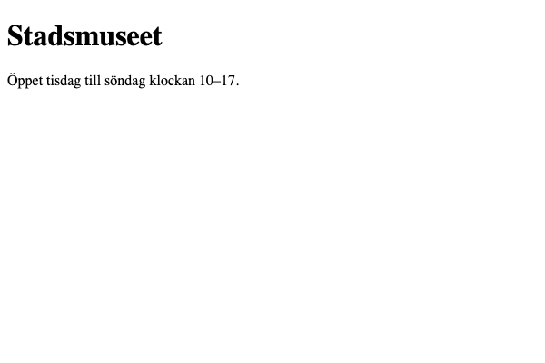
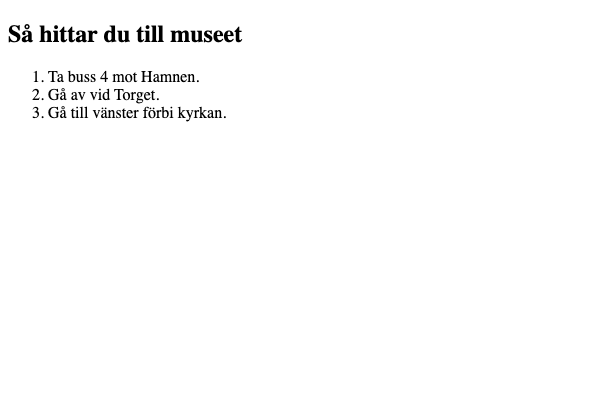
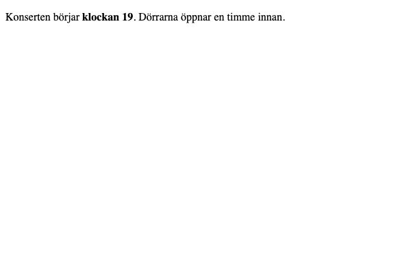
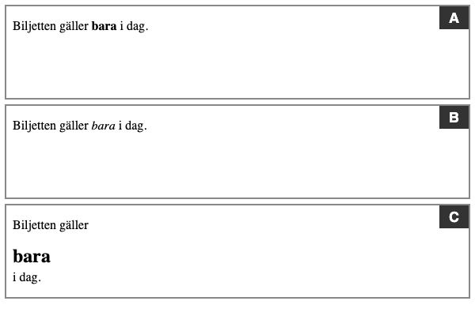
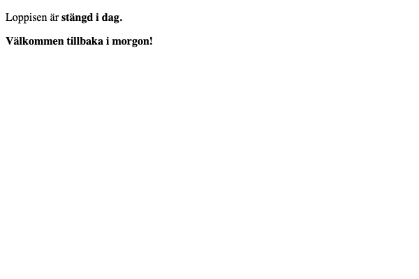
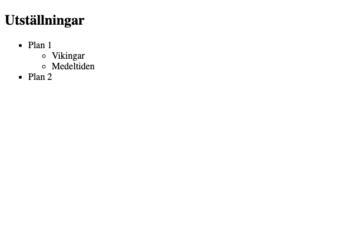
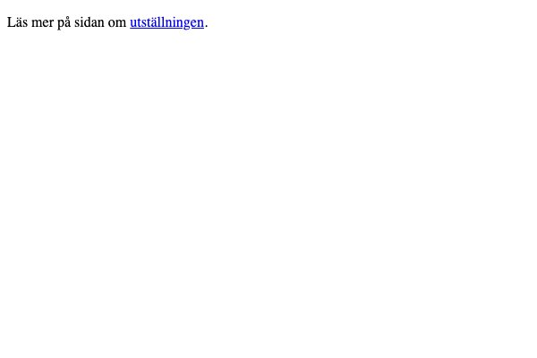
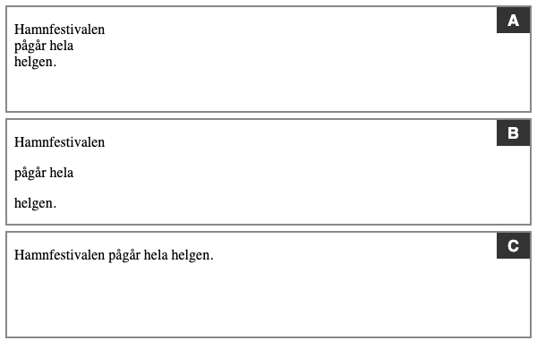
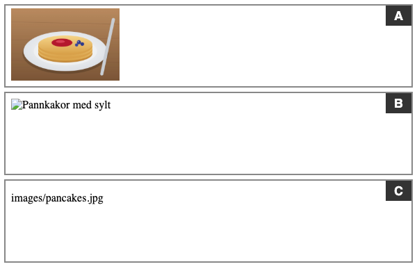
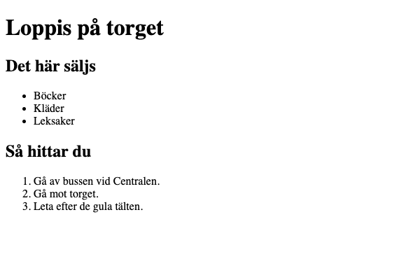

Läs koden · Vecka 47
Så här gör du: Varje fråga visar en bild av hur Chrome visar en liten bit HTML, och tre kodalternativ, A, B och C. Ett av dem ger exakt bilden. Titta noga på bilden, läs alla tre alternativen och välj. Fråga 4, 8 och 9 är tvärtom: en kod och tre bilder, och du väljer bilden som koden ger. Gör frågorna tillsammans med ditt lag. Kom överens om ett svar innan du går vidare, och se till att du kan säga varför de andra två alternativen är fel. Facit står längst ner.
Koden i alternativen är bara det som står inuti <body>. Skelettet runt omkring (<!doctype html>, <html>, <head> …) är detsamma i alla och syns inte på sidan. Ingen av sidorna har någon egen formgivning, så det du ser är webbläsarens egna standardutseende för varje element: rubriker är stora och feta, listor har punkter eller siffror, länkar är blå och understrukna.
Fråga 1 · Museets startsida

Vilken kod ger bilden?
A
<p>Stadsmuseet</p>
<p>Öppet tisdag till söndag klockan 10–17.</p>B
<h1>Stadsmuseet</h1>
<p>Öppet tisdag till söndag klockan 10–17.</p>C
<h3>Stadsmuseet</h3>
<p>Öppet tisdag till söndag klockan 10–17.</p>Fråga 2 · Vägen till museet

Vilken kod ger bilden?
A
<h2>Så hittar du till museet</h2>
<ol>
<li>Ta buss 4 mot Hamnen.</li>
<li>Gå av vid Torget.</li>
<li>Gå till vänster förbi kyrkan.</li>
</ol>B
<h2>Så hittar du till museet</h2>
<ul>
<li>Ta buss 4 mot Hamnen.</li>
<li>Gå av vid Torget.</li>
<li>Gå till vänster förbi kyrkan.</li>
</ul>C
<h2>Så hittar du till museet</h2>
<ul>
<li>1. Ta buss 4 mot Hamnen.</li>
<li>2. Gå av vid Torget.</li>
<li>3. Gå till vänster förbi kyrkan.</li>
</ul>Fråga 3 · Konserten

Vilken kod ger bilden?
A
<p>Konserten börjar <em>klockan 19</em>. Dörrarna öppnar en timme innan.</p>B
<p><strong>Konserten börjar klockan 19.</strong> Dörrarna öppnar en timme innan.</p>C
<p>Konserten börjar <strong>klockan 19</strong>. Dörrarna öppnar en timme innan.</p>Fråga 4 · Biljetten (en kod, tre bilder)
<p>Biljetten gäller <em>bara</em> i dag.</p>
Vilken bild, A, B eller C, visar vad koden ger?
Fråga 5 · Loppisen

Vilken kod ger bilden? Titta noga på var fetstilen börjar och slutar.
A
<p>Loppisen är <strong>stängd i dag.</p>
<p>Välkommen tillbaka i morgon!</p>B
<p>Loppisen är <strong>stängd</strong> i dag.</p>
<p>Välkommen tillbaka i morgon!</p>C
<p>Loppisen är <strong>stängd</strong> i dag.</p>
<p><strong>Välkommen tillbaka i morgon!</strong></p>Fråga 6 · Våningsplanen

Vilken kod ger bilden?
A
<h2>Utställningar</h2>
<ul>
<li>Plan 1</li>
<li>Vikingar</li>
<li>Medeltiden</li>
<li>Plan 2</li>
</ul>B
<h2>Utställningar</h2>
<ul>
<li>
Plan 1
<ol>
<li>Vikingar</li>
<li>Medeltiden</li>
</ol>
</li>
<li>Plan 2</li>
</ul>C
<h2>Utställningar</h2>
<ul>
<li>
Plan 1
<ul>
<li>Vikingar</li>
<li>Medeltiden</li>
</ul>
</li>
<li>Plan 2</li>
</ul>Fråga 7 · Länken till utställningen

Vilken kod ger bilden?
A
<p>Läs mer på sidan om <a>utställningen</a>.</p>B
<p>Läs mer på sidan om <a href="exhibition.html">utställningen</a>.</p>C
<p><a href="exhibition.html">Läs mer på sidan om utställningen.</a></p>Fråga 8 · Hamnfestivalen (en kod, tre bilder)
<p>
Hamnfestivalen
pågår hela
helgen.
</p>
Vilken bild, A, B eller C, visar vad koden ger?
Fråga 9 · Bilden som inte syns (en kod, tre bilder)
Så här ser mappen ut:
ovningar/
├── recipe.html
└── pancakes.jpgOch det här står i recipe.html:
<img src="images/pancakes.jpg" alt="Pannkakor med sylt" />
Vilken bild, A, B eller C, visar vad Chrome visar?
Fråga 10 · Loppis på torget

Vilken kod ger bilden?
A
<h1>Loppis på torget</h1>
<h2>Det här säljs</h2>
<ul>
<li>Böcker</li>
<li>Kläder</li>
<li>Leksaker</li>
</ul>
<h2>Så hittar du</h2>
<ol>
<li>Gå av bussen vid Centralen.</li>
<li>Gå mot torget.</li>
<li>Leta efter de gula tälten.</li>
</ol>B
<h1>Loppis på torget</h1>
<h2>Det här säljs</h2>
<ol>
<li>Böcker</li>
<li>Kläder</li>
<li>Leksaker</li>
</ol>
<h2>Så hittar du</h2>
<ul>
<li>Gå av bussen vid Centralen.</li>
<li>Gå mot torget.</li>
<li>Leta efter de gula tälten.</li>
</ul>C
<h1>Loppis på torget</h1>
<h1>Det här säljs</h1>
<ul>
<li>Böcker</li>
<li>Kläder</li>
<li>Leksaker</li>
</ul>
<h1>Så hittar du</h1>
<ol>
<li>Gå av bussen vid Centralen.</li>
<li>Gå mot torget.</li>
<li>Leta efter de gula tälten.</li>
</ol>Facit
Visa facit (titta först när laget har bestämt sig)
- B.
<h1>är den största rubriknivån. A har ingen rubrik alls, bara två stycken i samma storlek. C är en rubrik, men<h3>är bara lite större än vanlig text. - A. Siffrorna kommer från
<ol>, den numrerade listan. B ger punkter i stället för siffror. C ger både punkter och siffror, eftersom siffrorna står i texten. Skriv aldrig siffrorna själv;<ol>räknar åt dig. - C. Bara klockan 19 ligger inuti
<strong>, så bara de orden blir feta. A ger kursiv stil (<em>). B gör hela första meningen fet. - B.
<em>visas kursivt. Fetstil (A) kommer från<strong>, och en rubrik på egen rad (C) kräver ett rubrikelement. - A.
<strong>stängs aldrig, det saknas</strong>. Webbläsaren låter fetstilen fortsätta, också in i nästa stycke. B gör bara stängd fet. C gör stängd och hela andra stycket fett, men inte i dag. Varje starttagg behöver sin sluttagg. (Prettier vägrar ordna koden i A när du sparar, och det är en ledtråd om att något är fel.) - C. Den inre listan ligger inuti
<li>Plan 1 … </li>, och därför dras den in under Plan 1. En lista inuti en annan lista får andra punkter (ringar). A är en enda platt lista utan indrag. B är också nästlad, men den inre listan är<ol>och får siffror. - B. Bara utställningen ligger inuti
<a>, ochhrefgör det till en länk. A har ingenhrefoch blir därför inte blå; det är ingen länk för webbläsaren. C gör hela meningen till en länk. - C. Radbrytningar och extra mellanslag i koden syns inte på sidan; webbläsaren gör om dem till ett vanligt mellanslag. Vill du ha nya stycken (B) skriver du flera
<p>. (Prettier skulle för övrigt göra om koden till en enda rad när du sparar.) - B.
srcsäger att bilden ligger i mappenimages, men den ligger bredvidrecipe.html. Chrome hittar inte filen och visar alt-texten med en ikon för trasig bild. Rätt sökväg här är barapancakes.jpg, eller så flyttar man bilden till en mappimages. Texten isrc(C) visas aldrig på sidan. - A. Underrubrikerna är
<h2>och därför mindre än<h1>; först kommer punktlistan (<ul>), sedan den numrerade (<ol>). B har bytt plats på listtyperna. C har tre<h1>som blir lika stora. En sida ska ha en<h1>.